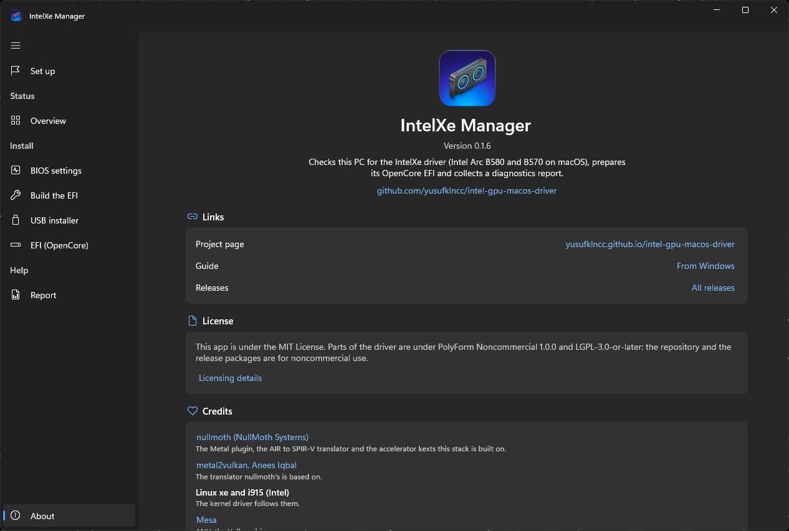
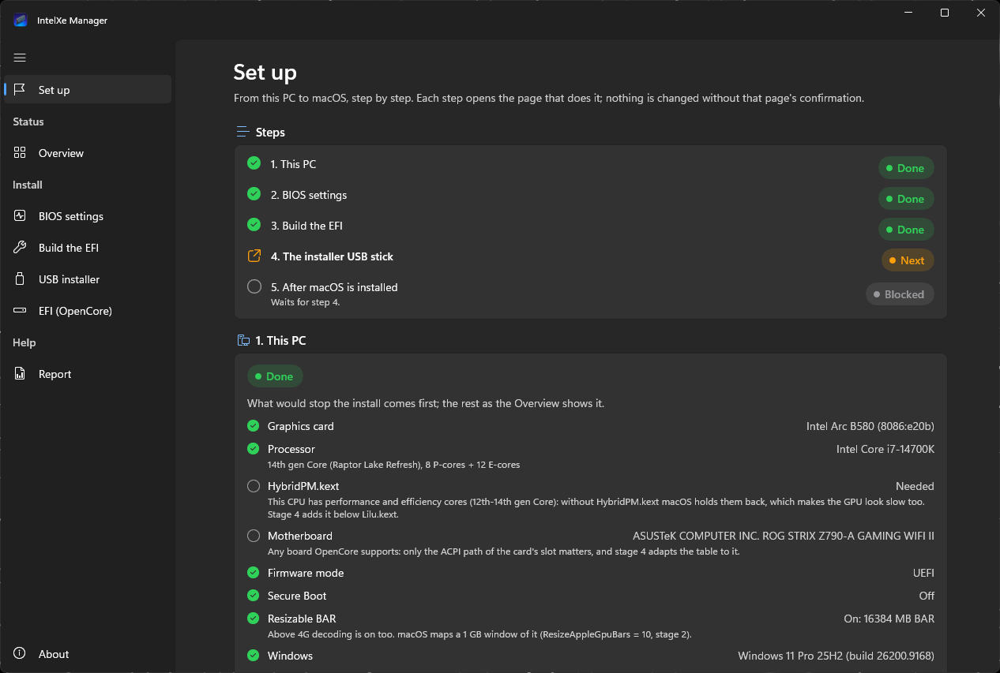
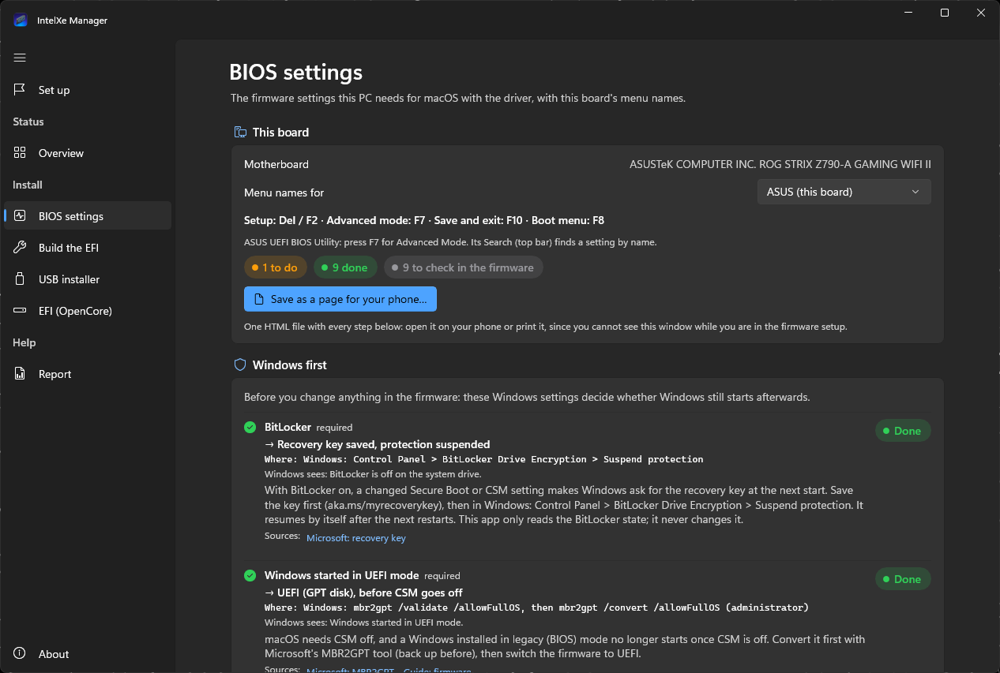
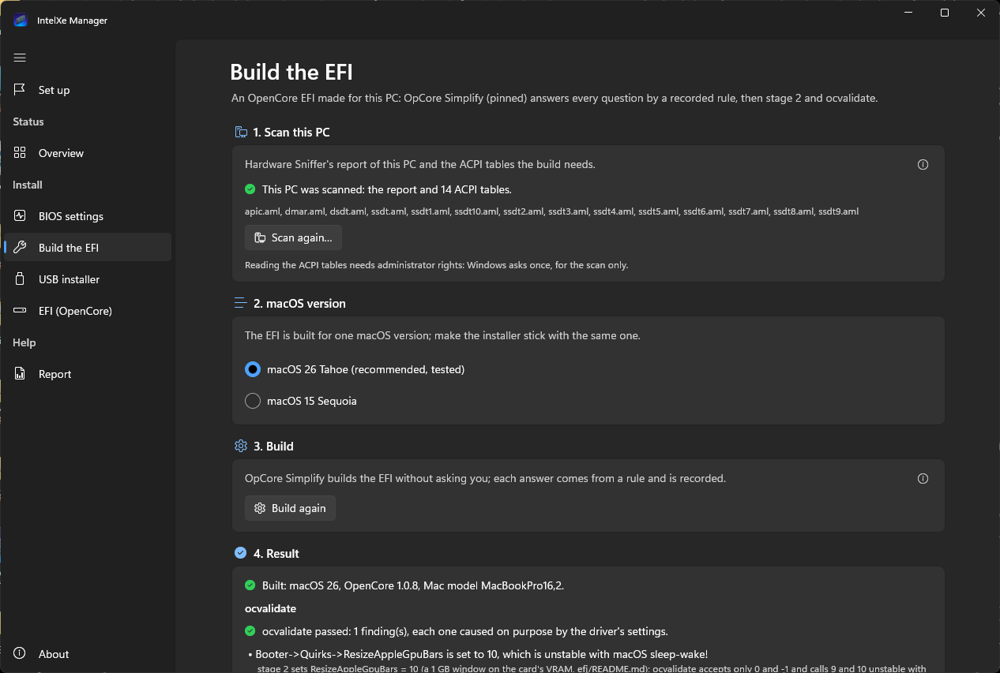
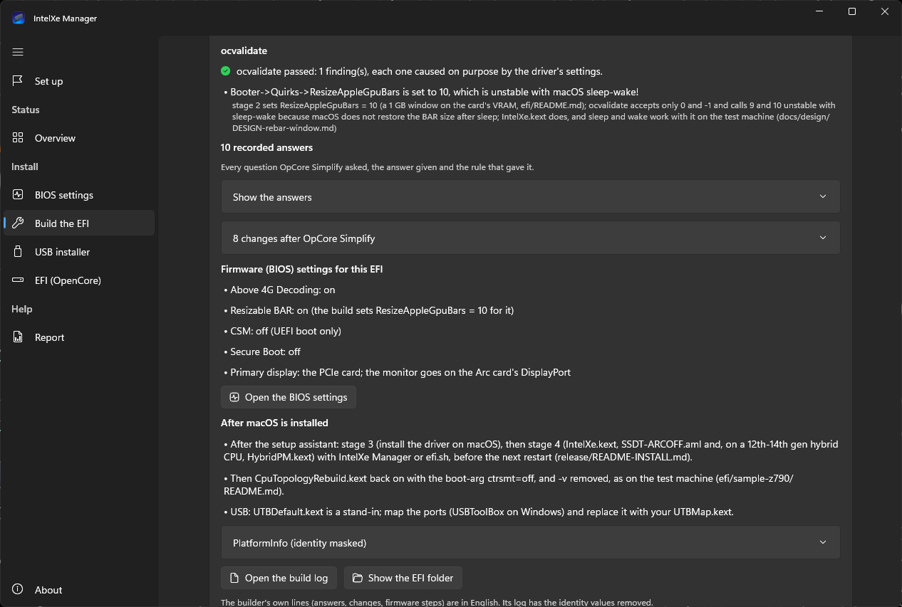
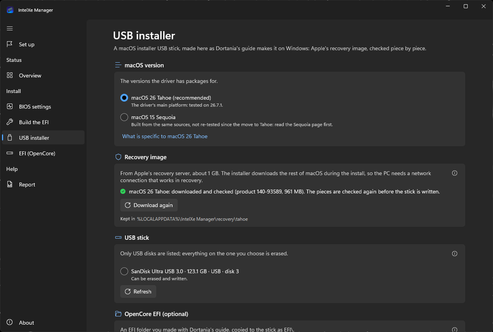
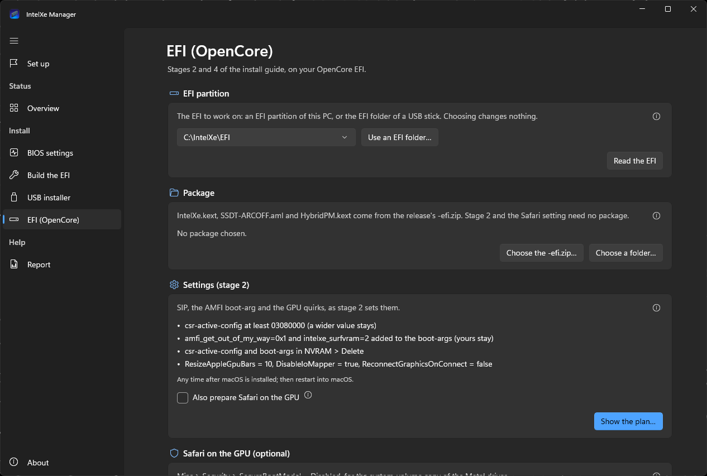
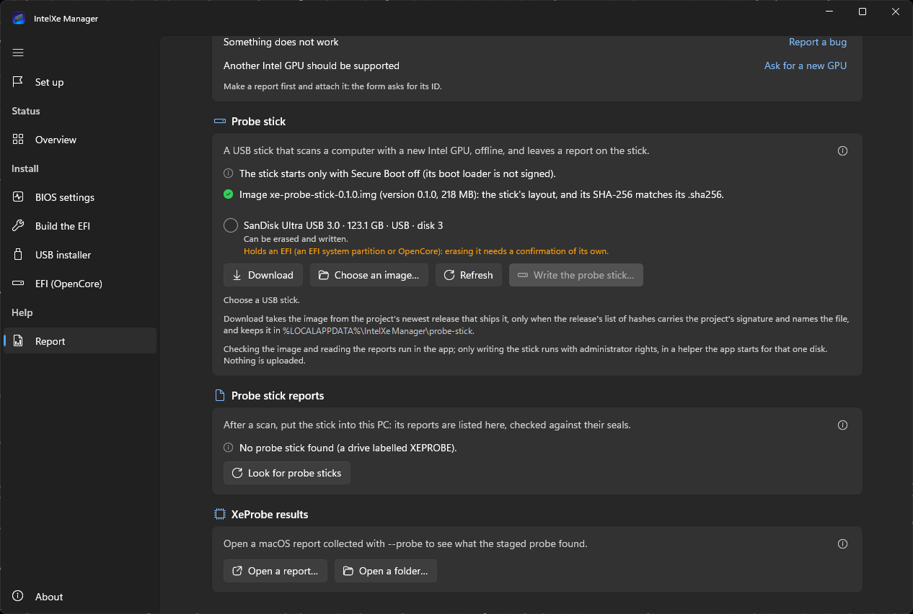

InstallationKurulum
The Windows app, step by stepWindows uygulamasıyla adım adım
From a Windows PC with an Arc B580 or B570 to macOS with the driver. IntelXe Manager for Windows checks the PC, lists the BIOS settings for your board, builds an OpenCore EFI for this PC, makes the macOS installer USB stick, and later puts the driver's pieces into the EFI. One section per step, in the app's own order.Arc B580 ya da B570 takılı bir Windows bilgisayardan, sürücüsü kurulu bir macOS'a. Windows için IntelXe Manager bilgisayarı denetliyor, anakartınıza göre BIOS ayarlarını listeliyor, bu bilgisayar için bir OpenCore EFI'si oluşturuyor, macOS'un USB kurulum belleğini hazırlıyor ve sonra sürücünün parçalarını EFI'ye ekliyor. Her adım ayrı bir bölümde, uygulamadaki sırayla anlatılıyor.
- You needGerekenler
- An Arc B580 or B570 with one monitor on its DisplayPort; Windows 10 (2004 or later) or 11, x64, on the same PC; a USB stick of 16 GB or more you can erase; a disk for macOS; Ethernet; your BitLocker recovery key (all of it)DisplayPort çıkışında tek monitör olan bir Arc B580 ya da B570; aynı bilgisayarda Windows 10 (2004 ya da sonrası) veya 11, x64; içi silinebilecek, en az 16 GB'lık bir USB bellek; macOS için bir disk; Ethernet; BitLocker kurtarma anahtarınız (tam liste)
- TakesSüre
- Two to three hours.İki üç saat.
- ResultSonuç
- macOS installed from the stick the app wrote, then the driver (step 6): the desktop accelerated.macOS, uygulamanın hazırladığı bellekten kurulur, ardından sürücü (6. adım): masaüstü hızlandırmalı çalışır.
For release 0.1.6. The app was first published with 0.1.5; 0.1.6's is unchanged apart from its version (IntelXeManager-0.1.6-win-x64.zip). Stages 2 and 4 alone, with the app's EFI page or the script IntelXe-EFI.ps1 (also 0.1.4's Windows way): From Windows. The same guide, with pictures, is in the repository: docs/WINDOWS-GUIDE.md.
0.1.6 sürümü için. Uygulama ilk kez 0.1.5 ile yayımlandı; 0.1.6'daki sürümü, sürüm numarası dışında aynı (IntelXeManager-0.1.6-win-x64.zip). Yalnızca 2. ve 4. aşamaları uygulamanın EFI sayfasıyla ya da IntelXe-EFI.ps1 betiğiyle (0.1.4'ün Windows yolu) yapmak için: Windows'tan. Bu rehberin resimli hâli depoda: docs/WINDOWS-GUIDE.tr.md.
Status, 14 November 2026. On a Windows 11 test PC with the Arc B580: the app runs, in English and Turkish; the Overview and the BIOS settings page read the PC; Build the EFI built an EFI on Windows (ocvalidate passed); the USB installer page downloaded macOS Tahoe's recovery from Apple (every piece matched Apple's signed list) and wrote a real USB stick (the image and all 106 EFI files read back identical); the probe stick was written to a real USB stick and read back identical. Each of those first real runs found a bug, fixed since (build 14 Nov). Not yet done on real hardware: changing a real EFI partition from the app, and booting a PC from an EFI the app built or a stick it wrote. Until then: keep a second way to boot (a USB stick with an EFI that works, or Windows on its own disk), and read every plan before you confirm it.
Durum, 14 Kasım 2026. Arc B580 takılı bir Windows 11 test bilgisayarında uygulama İngilizce ve Türkçe çalışıyor; Genel bakış ve BIOS ayarları sayfaları bilgisayarı okuyor; EFI'yi oluştur sayfası Windows'ta bir EFI oluşturdu (ocvalidate geçti); USB kurulum belleği sayfası macOS Tahoe'nun recovery görüntüsünü Apple'dan indirdi (her parçası Apple'ın imzalı listesiyle eşleşti) ve gerçek bir USB belleğe yazdı (geri okumada görüntü de 106 EFI dosyasının hepsi de aynı çıktı); tarama belleği de gerçek bir USB belleğe yazıldı ve geri okumada aynı çıktı. Bu ilk gerçek denemelerin her biri bir hata ortaya çıkardı; hepsi düzeltildi (14 Kasım derlemesi). Gerçek donanımda henüz denenmeyenler: uygulamayla gerçek bir EFI bölümünü değiştirmek ve bir bilgisayarı uygulamanın oluşturduğu bir EFI'den ya da yazdığı bir bellekten açmak. O zamana kadar bilgisayarı açmanın ikinci bir yolunu hazır tutun (çalışan bir EFI'si olan bir USB bellek ya da kendi diskinde Windows) ve her planı onaylamadan önce okuyun.
What you needGerekenler
- The card: an Arc B580 (tested) or B570 (supported, not yet tested by anyone); the Pro B60 and B50 are matched too, untested. One monitor on the card's DisplayPort. No integrated GPU needed.
- The CPU: Intel, one that macOS 26 or 15 runs on. Tested on a 14th gen Core; 12th-14th gen hybrid CPUs get
HybridPM.kext. AMD is refused. - The board: a desktop board OpenCore boots macOS on (tested: an ASUS Z790). Disks behind Intel VMD, RST or RAID need AHCI.
- Windows 10 (2004 or later) or 11, x64 on the same PC: the app reads this PC to build its EFI.
- A USB stick of 16 GB or more you can erase (the app takes 4 to 128 GB); a disk for macOS (installing erases it; a disk of its own keeps Windows safe); Ethernet for the install; your BitLocker recovery key; two to three hours.
- Kart: bir Arc B580 (denendi) ya da B570 (destekleniyor, henüz kimse denemedi); Pro B60 ve B50 de tanınıyor ama denenmedi. Kartın DisplayPort çıkışına bağlı tek bir monitör. Dahili GPU gerekmiyor.
- İşlemci: macOS 26'nın ya da 15'in çalıştığı bir Intel işlemci. 14. nesil bir Core'da denendi; 12.-14. nesil hibrit işlemcilere
HybridPM.kextde ekleniyor. AMD işlemciler reddediliyor. - Anakart: OpenCore'un macOS'u açabildiği bir masaüstü anakart (denenen: bir ASUS Z790). Intel VMD, RST ya da RAID arkasındaki diskler için AHCI'ye geçmek gerekiyor.
- Aynı bilgisayarda Windows 10 (2004 ya da sonrası) veya 11, x64: uygulama EFI'yi bu bilgisayarın donanımını okuyarak oluşturuyor.
- İçi silinebilecek, en az 16 GB'lık bir USB bellek (uygulama 4-128 GB arasını kabul ediyor); macOS için bir disk (kurulum bu diski siliyor; macOS'a ayrı bir disk vermek Windows'u güvende tutar); kurulum için Ethernet; BitLocker kurtarma anahtarınız; iki üç saat.
Download and first startİndirme ve ilk açılış
- From the release page:
IntelXeManager-0.1.6-win-x64.zipandintel-gpu-macos-driver-0.1.6-efi.zip(needed in step 6). - Check the app's zip: its SHA-256 must be the one in
intel-gpu-macos-driver-0.1.6.sha256on the release page. - Unpack both into one short local folder (right-click > Extract All), for example
C:\IntelXe: not a OneDrive folder, and not straight from inside the zip. Nothing is installed (about 216 MB). - Start
IntelXeManager.exe. SmartScreen may say "Windows protected your PC": More info > Run anyway. The app has no code-signing certificate, so Windows names an unknown publisher; the SHA-256 is what tells you the copy is the release's.
- Sürüm sayfasından
IntelXeManager-0.1.6-win-x64.zipveintel-gpu-macos-driver-0.1.6-efi.zipdosyalarını indirin (ikincisi 6. adımda gerekiyor). - Uygulamanın zip'ini denetleyin: SHA-256'sı sürüm sayfasındaki
intel-gpu-macos-driver-0.1.6.sha256listesindekiyle aynı olmalı. - İkisini de kısa yollu, yerel bir klasöre çıkarın (sağ tık > Tümünü Ayıkla), örneğin
C:\IntelXe. Bu bir OneDrive klasörü olmasın; uygulamayı zip'in içinden de çalıştırmayın. Kurulacak bir şey yok (açılmış hâli yaklaşık 216 MB). IntelXeManager.exe'yi başlatın. SmartScreen "Windows bilgisayarınızı korudu" uyarısı çıkarsa: Ek bilgi > Yine de çalıştır. Uygulamanın kod imzalama sertifikası olmadığı için Windows yayımcıyı bilinmeyen olarak gösteriyor; elinizdeki kopyanın sürümdeki dosya olduğunu SHA-256 karşılaştırması gösteriyor.
Get-FileHash .\IntelXeManager-0.1.6-win-x64.zip -Algorithm SHA256Administrator prompts (UAC) come only for disks, each time through the app's own helper (--efi-helper, --stick-helper, --probe-helper): once for Scan this PC…, once per stick written, each reading of an EFI partition (a change asks twice: its plan, then the change), and a report with Boot logs. An EFI folder on a stick needs none; the Overview never asks. A prompt at any other moment: say No and open an issue. About switches the language (English, Turkish) and the appearance.
Yönetici izni istemi (UAC) yalnızca disk işlemleri için ve her seferinde uygulamanın kendi yardımcısı üzerinden geliyor (--efi-helper, --stick-helper, --probe-helper): Bu bilgisayarı tara… için bir kez, yazılan her bellek için bir kez, bir EFI bölümü her okunduğunda (bir değişiklik iki kez sorar: önce planı için, sonra değişikliğin kendisi için) ve Açılış günlükleri açık bir rapor için. Bellekteki bir EFI klasörü için istem çıkmıyor; Genel bakış da hiç sormuyor. Başka bir anda bir istem çıkarsa Hayır deyin ve bir issue açın. Dili (İngilizce, Türkçe) ve görünümü Hakkında sayfasında değiştirebilirsiniz.

The app's pagesUygulamanın sayfaları
| English | Türkçe | What it doesNe işe yarar |
|---|---|---|
| Set up | Kurulum | the way as five steps (Done, Next, Blocked); each opens its pageyolun beş adımı (Tamam, Sıradaki, Bekliyor); her adım kendi sayfasını açar |
| Overview | Genel bakış | reads the PC, changes nothingbilgisayarı okur, hiçbir şeyi değiştirmez |
| BIOS settings | BIOS ayarları | firmware settings with your board maker's menu namesanakart üreticinizin menü adlarıyla firmware ayarları |
| Build the EFI | EFI'yi oluştur | an OpenCore EFI for this PCbu bilgisayar için bir OpenCore EFI'si |
| USB installer | USB kurulum belleği | macOS recovery from Apple and the EFI on a USB stickApple'dan indirilen macOS recovery'si ve EFI, bir USB bellekte |
| EFI (OpenCore) | EFI (OpenCore) | stage 2, stage 4, boot logging, undo2. aşama, 4. aşama, açılış günlüğü, geri alma |
| Report | Rapor | diagnostics report, probe stick, XeProbe resultstanılama raporu, tarama belleği, XeProbe sonuçları |

Start on Set up: 1. This PC, 2. BIOS settings, 3. Build the EFI, 4. The installer USB stick, 5. After macOS is installed. It writes only its progress; Do this step again and Start over change nothing on a disk.
Kurulum sayfasından başlayın: 1. Bu bilgisayar, 2. BIOS ayarları, 3. EFI'yi oluştur, 4. Yükleyici USB bellek, 5. macOS kurulduktan sonra. Bu sayfa yalnızca ilerlemenizi kaydediyor; Bu adımı yeniden yap ve Baştan başla hiçbir diskte değişiklik yapmıyor.
Step 1: Check this PC (Overview)1. adım: Bu bilgisayarı denetleyin (Genel bakış)
Overview reads and changes nothing. This PC marks each item OK, Warning or Problem: the graphics card (No Arc B580 or B570 found: check the card, its power, Above 4G decoding and Resizable BAR), the processor and whether HybridPM.kext is Needed, the motherboard, the firmware mode (must be UEFI), Secure Boot (on is a warning: OpenCore does not start with it), Resizable BAR (On: … MB BAR), Windows, BitLocker and the EFI partitions (Needs mounting to read is normal). Refresh reads again.
Genel bakış yalnızca okuyor, hiçbir şeyi değiştirmiyor. Bu bilgisayar bölümü her maddeyi Sorun yok, Uyarı ya da Sorun olarak işaretliyor: ekran kartı (Arc B580 veya B570 bulunamadı diyorsa kartı, güç bağlantısını, Above 4G Decoding'i ve Resizable BAR'ı denetleyin), işlemci ve HybridPM.kext'in Gerekli olup olmadığı, anakart, firmware modu (UEFI olmalı), Secure Boot (açıksa uyarı verir: OpenCore Secure Boot açıkken başlamıyor), Resizable BAR (Açık: … MB BAR), Windows, BitLocker ve EFI bölümleri (Okumak için bağlanmalı yazması normal). Yenile her şeyi yeniden okuyor.

Step 2: BIOS settings2. adım: BIOS ayarları
BIOS settings lists each setting with your board maker's menu names (ASUS, MSI, Gigabyte, ASRock, a generic hint for others) and the keys, marked Done, To do or Cannot tell; it changes nothing. Save as a page for your phone… writes the steps as one HTML file, since you cannot see the window in the firmware setup.
BIOS ayarları sayfası her ayarı anakart üreticinizin menü adları (ASUS, MSI, Gigabyte, ASRock; diğerleri için genel bir ipucu) ve tuşlarıyla listeliyor, her birini Tamam, Yapılacak ya da Bilinemiyor olarak işaretliyor; hiçbir ayarı değiştirmiyor. BIOS menüsündeyken bu pencereyi göremeyeceğiniz için Telefon için sayfa olarak kaydet… adımları tek bir HTML dosyasına yazıyor.
- Windows first: BitLocker recovery key saved and protection suspended; Windows in UEFI mode (MBR2GPT before CSM goes off); AHCI instead of RAID, RST or VMD, prepared as your board documents it (usually one start in Safe Mode).
- Then in the firmware: Secure Boot off, CSM off, Above 4G Decoding on, Resizable BAR on (required); first display on the PCIe card, integrated graphics off, VT-d off, CFG Lock off, XHCI Hand-off on, Fast Boot off (recommended). Save and exit, let Windows start once.
- Refresh, then I did these on Set up. Before step 3: the EFI is built from what the firmware reports.
- Önce Windows'ta: BitLocker kurtarma anahtarını kaydedin ve korumayı askıya alın; Windows UEFI modunda kurulu olmalı (değilse CSM'yi kapatmadan önce MBR2GPT ile dönüştürün); RAID, RST ya da VMD yerine AHCI'ye, anakartınızın belgelerinde anlatıldığı gibi hazırlanarak geçin (çoğu zaman Windows'u bir kez güvenli modda açmak gerekir).
- Sonra BIOS'ta: Secure Boot kapalı, CSM kapalı, Above 4G Decoding açık, Resizable BAR açık (bunlar gerekli); ilk ekran PCIe kart, dahili grafik kapalı, VT-d kapalı, CFG Lock kapalı, XHCI Hand-off açık, Fast Boot kapalı (bunlar önerilen). Kaydedip çıkın ve Windows'u bir kez başlatın.
- Yenile'ye, sonra Kurulum sayfasında Bunları yaptım'a basın. Bunu 3. adımdan önce yapın: EFI, firmware'in bildirdiği bilgilerle oluşturuluyor.

Step 3: Build the EFI3. adım: EFI'yi oluşturun
Build the EFI makes an OpenCore EFI for this PC with OpCore Simplify at a pinned version: a recorded rule answers each of its questions. Then stage 2 of the install guide and ocvalidate.
EFI'yi oluştur sayfası, sürümü sabitlenmiş OpCore Simplify ile bu bilgisayar için bir OpenCore EFI'si oluşturuyor; programın her sorusunu kayıtlı bir kural yanıtlıyor. Ardından kurulum rehberinin 2. aşamasını uyguluyor ve ocvalidate'i çalıştırıyor.
- Scan this PC… (one administrator prompt): Hardware Sniffer and
acpidump.exe; only the DSDT, SSDT, APIC and DMAR tables are kept, never MSDM (the Windows product key). Nothing is sent. - macOS version: macOS 26 Tahoe (recommended, tested) or 15 Sequoia (not re-tested). Make the stick with the same one.
- Build the EFI: as you, downloading OpenCore and the kexts from GitHub, each pinned by SHA-256.
- The result: Built: macOS 26, OpenCore 1.0.8, Mac model MacBookPro16,2.; ocvalidate passed: 1 finding(s), the expected
ResizeAppleGpuBarsline; stage 2 and the Safari setting complete; every answer with its rule; the firmware steps and the after-install notes (keep them for step 6); PlatformInfo masked. - Make the installer stick…, or Save the EFI folder…. Keep the EFI to yourself: its
config.plistholds the generated serial number.
- Bu bilgisayarı tara… (bir yönetici izni istemi): Hardware Sniffer ve
acpidump.exeçalışıyor; yalnızca DSDT, SSDT, APIC ve DMAR tabloları saklanıyor, MSDM (Windows ürün anahtarı) hiçbir zaman. Hiçbir şey gönderilmiyor. - macOS sürümü: macOS 26 Tahoe (önerilen, denendi) ya da 15 Sequoia (yeniden denenmedi). Belleği de aynı sürümle hazırlayın.
- EFI'yi oluştur: yönetici hakkı istemeden, sizin haklarınızla çalışıyor; OpenCore'u ve kext'leri GitHub'dan, her birinin SHA-256'sı sabitlenmiş olarak indiriyor.
- Sonuç: Oluşturuldu: macOS 26, OpenCore 1.0.8, Mac modeli MacBookPro16,2.; ocvalidate geçti: 1 bulgu, beklenen
ResizeAppleGpuBarssatırı; 2. aşama ve Safari ayarı eksiksiz; her yanıt kuralıyla; firmware adımları ve kurulumdan sonrası için notlar (6. adım için saklayın); PlatformInfo gizleniyor. - Yükleyici belleği hazırla… ya da EFI klasörünü kaydet…. EFI'yi kimseyle paylaşmayın:
config.plist'inde üretilen seri numarası var.


Step 4: The USB installer4. adım: USB kurulum belleği
- macOS version: the same as the build. Download from Apple: about 1 GB of recovery, every piece checked against Apple's signed chunklist; nothing about the PC is sent.
- USB stick: only USB disks are listed; a refused one shows its reason. Internal disks are never offered.
- OpenCore EFI: Use the EFI built on this PC.
- Erase and write the stick…: everything on the stick is erased. Type its name and size as shown (for example
SanDisk Ultra 16.0 GB), tick the extra box if it holds an EFI, Erase and write, one administrator prompt. The stick gets GPT, one FAT32 partitionMACOSwithcom.apple.recovery.boot\andEFI\, read back: The stick is ready.
- macOS sürümü: EFI'yi oluştururken seçtiğinizin aynısı. Apple'dan indir: yaklaşık 1 GB'lık recovery; her parçası Apple'ın imzalı chunklist'ine göre denetleniyor; bilgisayarınız hakkında hiçbir bilgi gönderilmiyor.
- USB bellek: yalnızca USB diskler listeleniyor; reddedilen bir bellek nedenini gösteriyor. Dahili diskler listeye hiç gelmiyor.
- OpenCore EFI: Bu bilgisayarda oluşturulan EFI'yi kullan.
- Belleği sil ve yaz…: bellekteki her şey siliniyor. Belleğin adını ve boyutunu gösterildiği gibi yazın (örneğin
SanDisk Ultra 16.0 GB), bellekte bir EFI varsa ek kutuyu da işaretleyin, Sil ve yaz'a basın ve yönetici iznini onaylayın. Bellek GPT ile bölümlenir, içindecom.apple.recovery.boot\veEFI\bulunan tek bir FAT32MACOSbölümü oluşturulur, ardından yazılanlar geri okunur: Bellek hazır.

Step 5: Boot from the stick and install macOS5. adım: Bellekten açıp macOS'u kurun
- Monitor on the card's DisplayPort. The boot menu key (ASUS F8, MSI F11, Gigabyte F12, ASRock F11; others often F12, F11, F8 or Esc), the stick's UEFI entry.
- In the OpenCore picker the entry ending in (dmg). Space shows hidden entries such as Reset NVRAM (once, when an earlier setting gets in the way; check the boot order afterwards).
- The first boot is text (verbose mode for the install), then the installer at the firmware resolution, slow: expected until step 6.
- Disk Utility: Show All Devices, the disk for macOS (it is erased), APFS, GUID Partition Map. Then Reinstall macOS on it; at each restart choose macOS Installer until it is gone, then your disk.
- Monitör kartın DisplayPort çıkışına bağlı olsun. Önyükleme menüsü tuşuna basın (ASUS F8, MSI F11, Gigabyte F12, ASRock F11; diğerlerinde çoğu zaman F12, F11, F8 ya da Esc) ve belleğin UEFI kaydını seçin.
- OpenCore'un açılış menüsünde adı (dmg) ile biten kaydı seçin. Boşluk tuşu Reset NVRAM gibi gizli kayıtları gösteriyor (eski bir ayar yolu tıkıyorsa bunu bir kez çalıştırın; sonra açılış sırasını denetleyin).
- İlk açılışta ekran yazıyla doluyor (kurulum için ayrıntılı mod); sonra kurulum programı firmware'in çözünürlüğünde ve yavaş açılıyor. 6. adıma kadar bu normal.
- Disk İzlencesi'nde Tüm Aygıtları Göster'i seçin ve macOS'un diskini APFS, GUID Bölüm Haritası olarak silin. Sonra macOS'u Yeniden Yükle ile macOS'u bu diske kurun; her yeniden başlatmada, kaybolana kadar macOS Installer'ı, ardından diskinizi seçin.
The PC now boots through the stick's EFI. Keep a stick with an EFI that boots; copying the EFI to the macOS disk (Dortania's Moving OpenCore from USB to macOS drive) is up to you: the app does not do it.
Bilgisayar artık belleğin EFI'siyle açılıyor. Bilgisayarı açabilen bir EFI'si olan bir belleği her zaman elinizde tutun. EFI'yi macOS diskine kopyalamak (Dortania'nın Moving OpenCore from USB to macOS drive sayfası) size kalmış; uygulama bunu yapmıyor.
Step 6: After macOS is up: the driver6. adım: macOS açıldıktan sonra sürücüyü kurun
- The build's notes: the USB map (USBToolBox) instead of
UTBDefault.kext; where the build turnedCpuTopologyRebuild.kextoff for the install, back on withctrsmt=offand-vremoved. - Stage 3 on macOS: IntelXe Manager for macOS and its setup assistant (From macOS). Do not restart yet.
- Stage 4: on macOS with IntelXe Manager's EFI page (recommended: it reads the card's ACPI path itself), or from Windows on EFI (OpenCore): shut macOS down, start Windows; Choose… a partition or Use an EFI folder… for the stick's; the package beside the app (All files match); check Path for SSDT-ARCOFF.aml against Device Manager's Location paths and tick the box; Show the plan… > Back up and apply. Then restart: the desktop should be accelerated. Undo puts the last change back.
- Oluşturma sonucundaki notlar:
UTBDefault.kextyerine bir USB haritası (USBToolBox) hazırlayın; oluşturma kurulum içinCpuTopologyRebuild.kext'i kapattıysa onuctrsmt=offile yeniden açın ve-v'yi kaldırın. - macOS'ta 3. aşama: macOS için IntelXe Manager ve kurulum yardımcısıyla (macOS'tan). Henüz yeniden başlatmayın.
- 4. aşama: macOS'ta IntelXe Manager'ın EFI sayfasıyla (önerilen: kartın ACPI yolunu kendisi okuyor) ya da Windows'ta EFI (OpenCore) sayfasıyla. Windows'tan yapacaksanız macOS'u kapatıp Windows'u başlatın; bir EFI bölümü için Seçin…, bellekteki EFI için Bir EFI klasörü kullan…; paket olarak uygulamanın yanındakini seçin (Bütün dosyalar uyuşuyor); SSDT-ARCOFF.aml için yol kutusundaki yolu Aygıt Yöneticisi'ndeki Konum yollarıyla karşılaştırıp onay kutusunu işaretleyin; Planı göster… > Yedekle ve uygula. Sonra yeniden başlatın: masaüstü hızlandırmalı açılmalı. Geri al son değişikliği geri alıyor.

Step 7: If it does not come up7. adım: Açılmazsa
A way back first: Shift with the macOS entry selected for safe mode, or a stick with the earlier EFI (the EFI page's Undo works from Windows). Known cases: Boot and kernel.
Önce geri dönmenin bir yolunu bulun: macOS kaydı seçiliyken Shift'e basılı tutarak güvenli moda geçin ya da önceki EFI'nin bulunduğu bir bellekten açın (EFI sayfasının Geri al düğmesi Windows'tan da çalışıyor). Bilinen durumlar: Açılış ve çekirdek.
- Boot logging: EFI (OpenCore) > Boot logging (for troubleshooting) > Turn on… on the EFI that fails; boot the failing way once.
- Report: Boot logs on, Create a diagnostics report. Serial numbers, user names and the like are removed; one zip on the Desktop, nothing uploaded.
- Copy the ID, Report a bug, attach the zip, and write what you did and what you saw (a photo of the screen helps). Never post the EFI or its
config.plist. - Turn off… boot logging again: it slows every boot.
- Açılış günlüğü: açılmayan EFI için EFI (OpenCore) > Açılış günlüğü (sorun giderme için) > Aç…; sonra o açılışı bir kez daha deneyin.
- Rapor: Açılış günlükleri açıkken Tanılama raporu oluştur. Seri numaraları, kullanıcı adları ve benzeri bilgiler çıkarılıyor; sonuç Masaüstünde tek bir zip, hiçbir şey yüklenmiyor.
- Numarayı kopyala, Hata bildir; zip'i ekleyin, ne yaptığınızı ve ne gördüğünüzü yazın (ekranın bir fotoğrafı çok yardımcı olur). EFI'yi ya da
config.plist'ini asla paylaşmayın. - Sonra açılış günlüğünü Kapat… ile yeniden kapatın: açık kaldıkça her açılışı yavaşlatıyor.

The probe stick (Report page) is for a computer with an Intel GPU the driver does not support yet, not for a B580 that does not boot: it starts Linux offline, records how Linux's driver starts the GPU and writes a report to the stick (Send a report). Experimental: written to a real USB stick, not yet booted on real hardware.
Tarama belleği (Rapor sayfası) açılmayan bir B580 için değil, sürücünün henüz desteklemediği bir Intel GPU'ya sahip bilgisayarlar için: Linux'u çevrim dışı başlatıyor, Linux sürücüsünün GPU'yu nasıl başlattığını kaydediyor ve belleğe bir rapor yazıyor (Rapor gönderin). Deneysel: gerçek bir USB belleğe yazıldı ama henüz gerçek donanımda açılmadı.

TroubleshootingSorun giderme
- SmartScreen, "Unknown publisher": expected without a code-signing certificate; check the SHA-256, then More info > Run anyway.
- The EFI builder is not beside the app: the
enginefolder is missing or changed (opened inside the zip, only the exe copied, an antivirus removed a file). Extract the whole zip again. FileNotFoundErrorin the build: an early build of the app; fixed for the release. Still there: send the build log.- Antivirus quarantine: restore the file or extract again, report the false positive to its maker and to us; do not turn the antivirus off.
- The scan fails: answer Yes to the prompt; otherwise a report and an issue with the message.
- The build stops: the reason is on the page. VMD or RAID: AHCI. … which downloads.lock.json does not pin: open an issue with the build log.
- The stick is not listed or is refused: the reason is under it; use a plain 4-128 GB USB stick (USB SSDs often report as fixed disks), or make it another way and press I made the stick another way.
- EFI partition: Needs mounting to read is normal; the EFI page mounts it at a free letter M: to Z: for each step and unmounts it again.
- Another PC? No: the scan, the build and stage 4's
HybridPM.kextdecision read the PC the app runs on.
- SmartScreen, "Bilinmeyen yayımcı": kod imzalama sertifikası olmadığı için bu beklenen bir uyarı; SHA-256'yı denetleyin, sonra Ek bilgi > Yine de çalıştır.
- EFI oluşturucu uygulamanın yanında değil:
engineklasörü eksik ya da değişmiş (uygulama zip'in içinden açılmış, yalnızca exe kopyalanmış ya da bir antivirüs bir dosyayı silmiş olabilir). Zip'in tamamını yeniden çıkarın. - Oluşturmada
FileNotFoundError: uygulamanın erken bir derlemesindeydi, yayımlanan sürümde düzeltildi. Yine çıkıyorsa oluşturma günlüğünü gönderin. - Antivirüs karantinası: dosyayı karantinadan geri alın ya da zip'i yeniden çıkarın; yanlış alarmı antivirüsün üreticisine ve bize bildirin. Antivirüsü kapatmayın.
- Tarama başarısız: izin istemine Evet deyin; yine olmuyorsa raporu ve hata mesajını ekleyerek bir issue açın.
- Oluşturma duruyor: nedeni sayfada yazıyor. VMD ya da RAID ise AHCI'ye geçin. … which downloads.lock.json does not pin görürseniz oluşturma günlüğüyle bir issue açın.
- Bellek listelenmiyor ya da reddediliyor: nedeni belleğin altında yazıyor; 4-128 GB arası sıradan bir USB bellek kullanın (USB SSD'ler çoğu zaman sabit disk olarak görünüyor) ya da belleği başka bir yolla hazırlayıp Belleği başka bir yolla hazırladım'a basın.
- EFI bölümü: Okumak için bağlanmalı yazması normal; EFI sayfası bölümü her işlem için M: ile Z: arasındaki boş bir sürücü harfine bağlıyor, iş bitince ayırıyor.
- Başka bir bilgisayar için kullanılabilir mi? Hayır: tarama, oluşturma ve 4. aşamadaki
HybridPM.kextkararı, uygulamanın çalıştığı bilgisayarın donanımına dayanıyor.
Where the app keeps thingsUygulamanın dosyaları nerede?
%LOCALAPPDATA%\IntelXe Manager\:settings.json,efibuild\scans\andefibuild\builds\(the scan, the built EFI and its log),recovery\,packages\,probe-stick\;%LOCALAPPDATA%\IntelXe\efibuild: the EFI builder's download cache, pinned by SHA-256;%LOCALAPPDATA%\intel-gpu-macos-driver\efi-backups\: backups of EFI partitions;IntelXe-EFI-backups\next to an EFI folder: backups of a stick's EFI;- the Desktop: the diagnostics reports.
%LOCALAPPDATA%\IntelXe Manager\:settings.json,efibuild\scans\veefibuild\builds\(taramalar, oluşturulan EFI'ler ve günlükleri),recovery\,packages\,probe-stick\;%LOCALAPPDATA%\IntelXe\efibuild: EFI oluşturucunun SHA-256 ile sabitlenmiş indirme önbelleği;%LOCALAPPDATA%\intel-gpu-macos-driver\efi-backups\: EFI bölümlerinin yedekleri; bir EFI klasörünün yanındaIntelXe-EFI-backups\: bir belleğin EFI'sinin yedekleri;- Masaüstü: tanılama raporları.